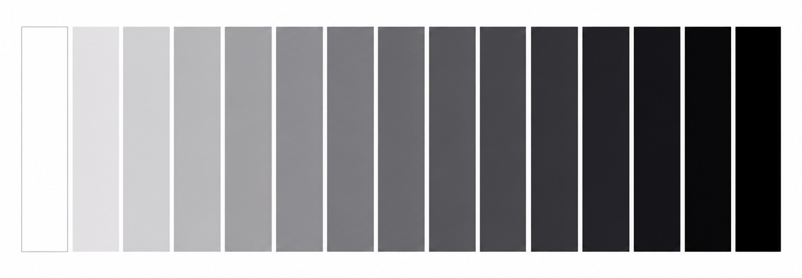
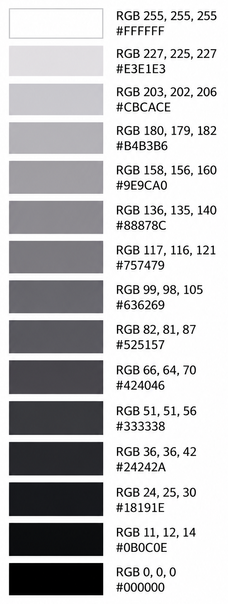

Bitácora
Color y percepción en la documentación arquitectónica
La estandarización de una escala de grises permite mantener criterios gráficos consistentes entre planos, proyectos y plataformas de trabajo. Su desarrollo también plantea una pregunta sobre la percepción. ¿Qué determina que una secuencia de tonos se vea equilibrada?
Durante la elaboración de esta paleta se ensayaron distintas formas de organizar los grises. Las primeras versiones utilizaron incrementos RGB constantes. Posteriormente, se incorporaron ajustes para conservar tonos que habían resultado adecuados en la práctica. En ambos casos persistía una dificultad visual. Algunas muestras parecían demasiado próximas entre sí, mientras que otras producían saltos de claridad evidentes.
La familiaridad con los planos y las herramientas de diseño permitía reconocer esas diferencias, aunque todavía faltaba un criterio para explicarlas.

De los valores digitales a la percepción
RGB y CMYK permiten especificar colores para su representación y reproducción. La apariencia que producen depende de la relación entre esos valores, el medio de salida y las condiciones de observación.
La percepción agrega otra dimensión. El sistema visual responde de forma no lineal a la luminancia y evalúa cada tono en relación con su entorno. Por ello, distribuir los valores RGB en intervalos constantes no garantiza que todos los cambios se perciban igualmente espaciados. La documentación del W3C distingue estas formas de interpolación y explica cómo la elección del espacio de color modifica las transiciones obtenidas [1].
Esta relación entre estímulo y sensación corresponde al campo de la psicofísica. Comprenderla permite vincular las decisiones técnicas de representación con la experiencia visual de quien interpreta el plano.
El aporte de CIELAB
El espacio CIELAB, también denominado Lab, ofrece un criterio para abordar esa relación. La Comisión Internacional de Iluminación lo define como un espacio de color aproximadamente uniforme, organizado mediante las coordenadas L*, a* y b*. Su coordenada L* constituye una aproximación a la claridad percibida [2].
En una escala neutra, mantener a* y b* en cero y distribuir las muestras mediante intervalos iguales de L* permite aproximar cambios de claridad visualmente equivalentes. Al convertirlos a RGB, los intervalos numéricos resultantes pueden variar.
Conocer este modelo modificó el criterio con el que se evaluaba la paleta. La comparación entre muestras pudo relacionarse con una medida de claridad perceptual y con las condiciones en las que se observaban.
La relación resulta familiar desde la acústica, donde el estudio del sonido comprende tanto sus características físicas como la respuesta de quien lo escucha. En la representación gráfica, considerar conjuntamente el estímulo y su percepción permite comprender mejor el comportamiento de los tonos.
Registro de la escala

Los quince tonos de la tabla documentan la escala adoptada por ANDIRA. Cada muestra queda identificada por sus valores RGB y su código hexadecimal.
La indagación comenzó con una decisión práctica dentro del estudio: conservar ciertos grises por el resultado que habían dado en planos anteriores. Al reunirlos, la atención pasó de cada tono a la relación entre tonos vecinos. Ese cambio de criterio tiene una implicación para el dibujo arquitectónico. El peso visual de una línea o de una superficie depende, en parte, de cuánto se distingue de los elementos que la rodean.
Referencias
[1] World Wide Web Consortium. CSS Color Module Level 4. Apartados 9.1, «CIE Lab and LCH», y 13, «Color Interpolation». Borrador de Recomendación Candidata, 23 de noviembre de 2026. Consultar documento.
[2] Commission Internationale de l’Éclairage. CIE S 017:2020, International Lighting Vocabulary, segunda edición. Entrada 17-23-076, «CIE 1976 L*a*b* colour space». Consultar definición.
← Inicio